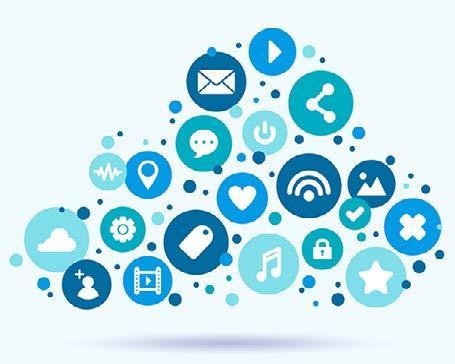

Módulo 4 | Aula 1
Papel e Importância da Comunicação em PIE
A comunicação como ponte entre ciência e sociedade
Ao longo deste curso você viu que a produção científica desempenha papel fundamental na compreensão de problemas sociais e de saúde, no desenvolvimento de tecnologias e na formulação de políticas públicas. Porém, existe uma lacuna entre ciência e sociedade.
A comunicação envolve processos de compartilhamento, mediação e adaptação das informações para diferentes contextos e públicos. Isso significa, como já pontuamos no início desta aula, considerar aspectos como:
- Linguagem.
- Acessibilidade.
- Formatos de apresentação.
- Necessidades informacionais dos sujeitos envolvidos.
No campo das PIE, a comunicação é um elemento essencial para fortalecer a relação entre pesquisa, tomada de decisão e participação social. Afinal, evidências científicas só podem contribuir para políticas públicas quando conseguem ser acessadas, compreendidas e utilizadas de forma efetiva.
Uma comunicação pensada de forma estratégica e em colaboração com seus interlocutores também está relacionada à democratização do acesso à informação. Tornar evidências mais acessíveis significa ampliar oportunidades de participação social, fortalecer o controle social das políticas públicas e reduzir desigualdades no acesso ao conhecimento.
As transformações nas tecnologias digitais ampliaram significativamente as possibilidades de circulação das informações científicas. Redes sociais, plataformas digitais, podcasts, vídeos e outros formatos multimídia passaram a integrar estratégias de comunicação utilizadas por instituições de pesquisa, organismos internacionais e iniciativas de Saúde Pública.

Fonte: Magnific (2026).
Ao mesmo tempo, esse cenário traz novos desafios...